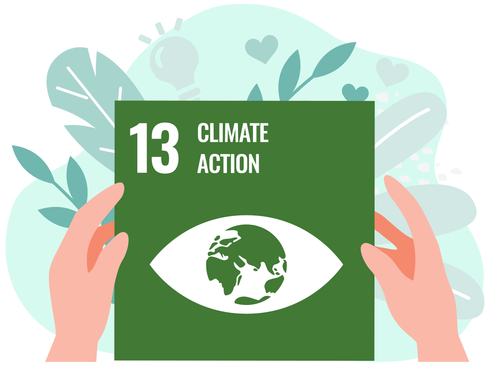
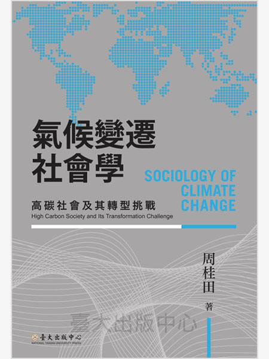

可負擔的潔淨能源
確保所有的人都可取得負擔得起、可靠、永續及現代的能源
結元林伯修的地熱發電還魂記》荒廢30年後，清水地熱再度商轉、穩供萬戶用電
詳全文
氣候行動
完備減緩調適行動，以因應氣候變遷及其影響
確保所有的人都可取得負擔得起、可靠、永續及現代的能源
完備減緩調適行動，以因應氣候變遷及其影響
日常生活的能源革命：八個臺灣能源轉型先驅者的故事
新能源与可持续发展概论
【能】怎麼轉：啟動臺灣能源轉型鑰匙
開創新能源時代：台灣太陽能教父左元淮的傳奇人生
中美布局：应对全球气候变化背景下的清洁能源合作
能源與氣候的迷思：兩兆元的政策失誤（修訂版）
How It Works知識大圖解 NO‧11：未來的能源─核融合發電
臺灣‧能‧革命：綠能大國或核災難民的選擇
公民能不能？能源科技、政策與民主
給未來總統的能源課：頂尖物理學家眼中的能源真相
為何害怕核能與輻射？
建構低碳綠活社會：全球綠色能源應用推廣案例
我們可以選擇的未來：拯救氣候危機
極度地球：搶救七大生態浩劫危機，出動！
我是小孩，我有權利保護地球
寂靜的春天：自然文學不朽經典全譯本
氣候賭局：延緩氣候變遷 vs. 風險與不確定性，經濟學能拿全球暖化怎麼辦？
生死時刻：對抗氣候災劫的關鍵十年
Warnings！：AI、基因編輯、瘟疫、駭客、暖化……全球災難警告，用科學方法洞悉真相
氣候變遷社會學：高碳社會及其轉型挑戰
How It Works知識大圖解 NO‧36：氣候變遷大解密
生態心理學：復育地球，療癒心靈
種樹的詩人：吳晟的呼喚，和你預約一片綠蔭，一座未來森林
區域低碳創新繫統理論與實踐研究：基於全球氣候變化的思考